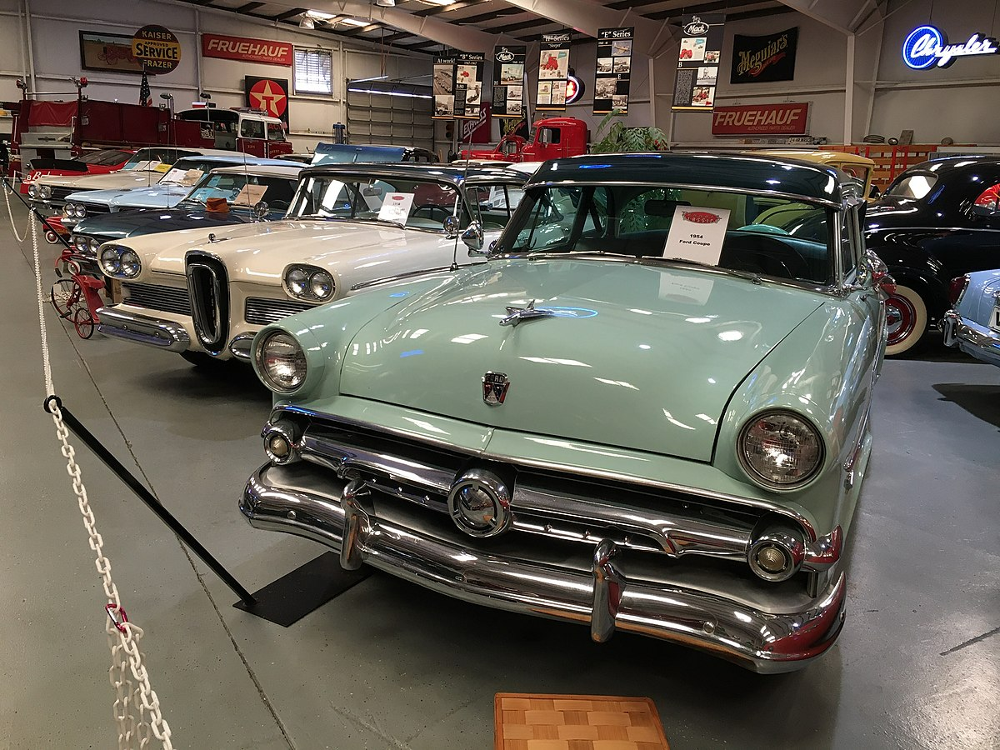
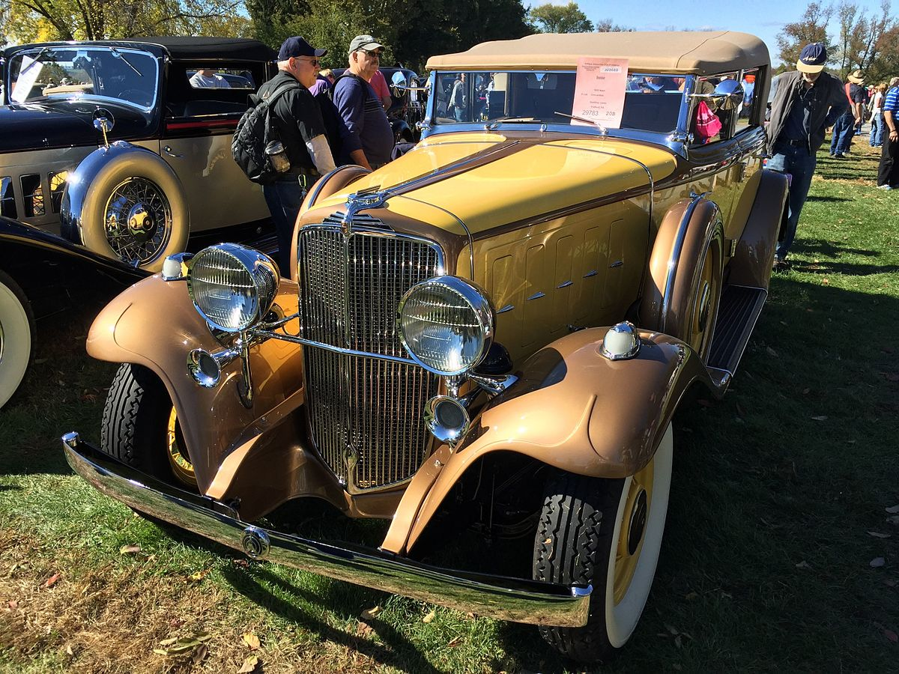
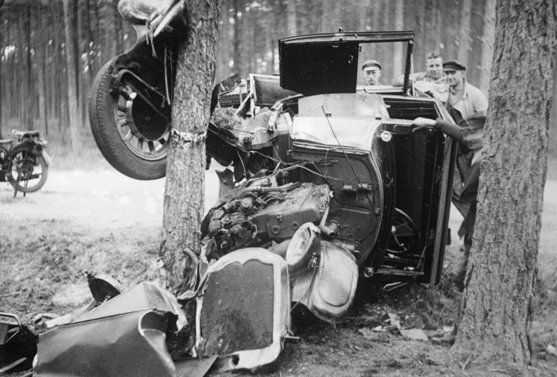

A classic car is an older car, typically 25 years or older, though definitions vary.[note 1] The common theme is of an older car of historical interest to be collectible and tend to be restored rather than scrapped. Classic cars are a subset of a broader category of "collector cars" (which includes both restored classic cars vehicles and newer exotic vehicles). A subset of what is considered classic cars are known as antique cars (manufactured before 1980) or vintage cars (manufactured pre-World War II).[1] Organizations such as the Classic Car Club of America (CCCA) maintain lists of eligible unmodified cars that are called "classic". These are described as "fine" or "distinctive" automobile, either American or foreign built, produced between 1915 and 1948. Post-World War II "classic cars" are not precisely defined and the term is often applied to any older vehicle.
The 2005–06 Ford GT made the 2021 Hagerty Bull Market List, which projects the hottest collector cars of the new year. Hagerty
The 1964–70 Honda S600 made the 2021 Hagerty Bull Market List, which projects the hottest collector cars of the new year. Hagerty
The 1984–91 Ferrari made the 2021 Hagerty Bull Market List, which projects the hottest collector cars of the new year. Hagerty
The 2000–06 Audi TT Quatro Coupe made the 2021 Hagerty Bull Market List, which projects the hottest collector cars of the new year. Hagerty
the 1948–54 Jaguar XK120 made the 2021 Hagerty Bull Market List, which projects the hottest collector cars of the new year. Hagerty
The 2005-17 Aston Martin Vantage made the 2021 Hagerty Bull Market List which projects the hottest collector cars of the new year. Hagerty
Australia has two main classic car registration categories the Historic Vehicles Scheme (HVS) and the Classic Vehicle Scheme (CVS), the latter for vehicles over the age of 25 (or 30) yet feature modifications out of the range to be considered ‘Historic’. Under these categories owners are not required to pay the usual registration fees etc. however use of the vehicle registered under the scheme is restricted to a set limit per registration term. Most classic Ford Falcons, Chrysler Valiants and Holdens (alongside Toranas and Commodores) are on either of the registers, however it is not uncommon for these cars to end up with full registrations either.
The Vintage Car Club of Canada (VCCC) recognizes vehicles that are 25 years old and older.[2] The VCCC is one of the oldest collector car clubs in Canada. It has been a registered Society since the mid 1950s. Each year a different Chapter hosts the annual May Tour in a different geographical location in British Columbia. The VCCC has approximately 2800 members in BC counting spouses. The club has been a continuous member of the (NAACC) National Association of Automobile Clubs of Canada Corporation since 1971.[citation needed] The National Association of Automobile Clubs of Canada (NAACC) recognizes stock and modified vehicles that are 20 years old and older. The National Association of Automobile Clubs of Canada is Federally incorporated as a 'not for profit' Corporation. Operational since 1970 it is one of the largest collector vehicle Associations in North America.[3] The NAACC is responsible for doing away with 'Duty' at the Canadian border. All vehicles and related parts that are 25 years old or older are 'Duty' free when entered into Canada. As of this writing the NAACC is represented in every Province in Canada. The Association sanctions two major Concours in Canada. The Cobble Beach Concours in Kemble Ontario (Owen Sound) and the Crescent Beach Concours on the west coast (Surrey BC) are sanctioned by the NAACC.[citation needed]
Cars produced in 1915 and older typically fall into the antique class and this includes the "Brass Era car" that are defined by the Horseless Carriage Club of America (HCCA) as "any pioneer gas, steam and electric motor vehicle built or manufactured prior to January 1, 1916."[4] The "classic" term is often applied loosely by owners to any car that is more than 20 years old.[5]  Classics in an American car museum Legally, most states have time-based rules for the definition of "historic" or "classic" for purposes such as antique vehicle registration. For example, Maryland defines historic vehicles as 20 calendar years old or older and they "must not have been substantially altered, remodeled or remanufactured from the manufacturers original design"[6] while West Virginia defines motor vehicles manufactured at least 25 years prior to the current year as eligible for "classic" car license plates.[7] Despite this, at many American classic car shows, automobiles typically range from the 1920s to the 1970s. Recently, many 1980s and even early 1990s cars are considered being "classic automobiles". Examples of cars at such shows include the Chevrolet Bel-Air, Ford Model T, Dodge Charger, Ford Deuce Coupe, and 1949 Ford. Meanwhile, the Concours d'Elegance car shows feature prestigious automobiles such as the Cadillac V16 or pre-1940 Rolls-Royce models. There are also terms as "modern customs", "exotics", or "collectibles" that cover cars such as the AMC Gremlin or Ford Pinto. There are differences in the exact identification of a "classic car". Division by separate eras include: horseless carriages (19th-century experimental automobiles such as the Daimler Motor Carriage), antique cars (brass era cars such as the Model T), and classic cars (typically 1930s cars such as the Cord 812). Some also include muscle cars, with the 1974 model year as the cutoff.
 1932 Nash Advanced Eight - a CCCA "Full Classic" car[8] The Classic Car Club of America describes a CCCA Classic as a "fine" or "distinctive" automobile, either American or foreign built, produced between 1915 and 1948. The CCCA is dedicated to the preservation and enjoyment of select cars that "are distinguished by their respective fine design, high engineering standards and superior workmanship."[9] Other differentiating factors - including engine displacement, custom coachwork, and luxury accessories such as power brakes, power clutch, and "one-shot" or automatic lubrication systems - help determine whether a car is considered a CCCA Classic.[10] The cars on their list "represent the pinnacle of engineering, styling and design for their era."[11] Any CCCA member may petition for a vehicle to join the list.[12] Such applications are carefully scrutinized, but rarely is a new vehicle type admitted.[13] Moreover, no commercial vehicles such as hearses, ambulances, or race cars are accepted as a Full Classic.[12] The CCCA maintains this definition of "classic car" and uses terms such as CCCA Classic or the trademarked Full Classic.[14] The CCCA has estimated that 1,366,843 "American Classics" were built.[15]
The Antique Automobile Club of America (AACA) recognizes "motorized vehicles 25 years old or older, which were built in factories and specifically designed and manufactured for transportation use on public roadways and highways."[16] Judging by the AACA evaluates such vehicles to be in historic or that have "been restored to the same state as the dealer could have prepared the vehicle for delivery to the customer." Specified AACA classic vehicles include "fine or unusual domestic or foreign automobiles primarily built between and including the years 1925 and 1942."[17] Renting Classic Cars in the US For those in the United States who do not own a classic car but still wish to get behind the wheel, few companies in the United States allow people to rent from their personal collection of classic cars. Monterey Touring Vehicles has over 30 classic cars that people can rent. On the East Coast, people in North Carolina can rent for special occasions in Raleigh from Carolina Classic Car Rentals.
There is no fixed definition of a classic car. Two taxation issues do impact however, leading to some people using them as cutoff dates. All cars built over 40 years ago are exempted from paying the annual road tax vehicle excise duty, and also exempt from the annual UK safety test known as the MOT test, however the vehicle can still be presented for test on a voluntary basis. HM Revenue and Customs define a classic car for company taxation purposes as being over 15 years old and having a value in excess of £15,000.[18] Additionally, popular acclaim through classic car magazines can play an important role in whether a car comes to be regarded as a classic but the definition remains subjective and a matter of opinion. The elimination of depreciation can be a reason for buying a classic car and picking 'future classics' that are current 'bangers' can result in a profit for the buyer as well as providing transport. An immaculate well cared for prestige model with high running costs that impacts its value, but is not yet old enough to be regarded as a classic, could be a good buy, for example.[19]
In Germany, vehicles which were first registered at least 30 years ago can apply for a special "Oldtimer" license plate with a 190€/year flat tax. These license plates have the format AB-CD 123H, with the final H implying "historisch" (historic) to preserve the so-called kraftfahrtechnisches Kulturgut ("vehicle of cultural value").[20] The cars are required to be in mostly original condition and in a preservation-worthy appearance (grade C by popular car grading standards), while the car's road-worthiness is established by separate mandatory safety inspections. Modifications which enhance safety (seatbelts, disc brakes) and environmental friendliness (catalytic converter, LPG conversion if invisible from the outside) are universally accepted. Other modifications are generally accepted if they are contemporary of the car's first registration (±10 years, burden on proof lies on the owner through historic materials like photographs) and new paintjobs of any color including two-tone paint if originally offered and historic company logos, but not murals or custom patterns.
Modern classic cars are generally older vehicles, ranging from 15 to 25 years, but are usually not accepted as classics according to the Antique Automobile Club of America.[citation needed][note 2] In the United Kingdom, the modern classic definition is open to the discretion often by Insurance Brokers and Insurance Companies who regard a Modern Classic as a vehicle that is considered collectible regardless of age.[21] The usage of the vehicle limited to recreational purposes or restricted mileage is also taken into account.
There was a worldwide change in styling trends in the immediate years after the end of World War II. The 1946 Crosley and Kaiser-Frazer, for example, changed the traditional discrete replaceable-fender treatment. From this point on, automobiles of all kinds became envelope bodies in basic plan. The CCCA term, "antique car" has been confined to "the functionally traditional designs of the earlier period" (mostly pre-war). They tended to have removable fenders, trunk, headlights, and a usual vertical grill treatment. In a large vehicle, such as a Duesenberg, Pierce-Arrow, or in a smaller form, the MG TC, with traditional lines, might typify the CCCA term. Another vehicle might be a classic example of a later period but not a car from the "classic period of design", in the opinion of the CCCA.
Classic cars are subject to various types of fraud, most notably provenance fraud, where owners falsify documentation and serial numbers in order to make a car's history seem more colorful and historic. Fraud also assumes the form of knowingly inflating a car's estimated resale value, as was referenced in court proceedings relating to JD Classics, hitherto one of the UK's largest and best-known classic car dealers prior to its collapse in 2018.[22] Emission levels[edit] Classic cars are typically built to meet the national car emission levels that were present in the year of production of the vehicle. EU and US emission standards have increased in many countries since then. As a result, they may not be allowed to enter cities with special emission restrictions or low emission zones.[23][24][25][26][27] Converting the car to run on a different fuel (i.e. SVO, LPG, CNG, hydrogen, ...) may decrease emission levels.[28][29][30]
 Car accident in 1930 Classic cars often lack what is now considered basic safety features, including seat belts, crumple zones or rollover protection. In September 2009, ABC News' Good Morning America and World News showed a U.S. Insurance Institute of Highway Safety crash test of a 2009 Chevrolet Malibu in an offset head-on collision with a 1959 Chevrolet Bel Air sedan. It dramatically demonstrated the effectiveness of modern car safety design, over 1950s X-frame design, particularly of rigid passenger safety cells and crumple zones.[31] [32] The 1959 Chevrolets used an X frame design which lacked structural rigidity; had the IIHS used a pre-1958 Chevrolet with a perimeter frame design, the results would have been much better.[33] Vehicle handling characteristics (particularly steering and suspension) and brake performance are likely to be poorer than current standards, hence requiring greater road-awareness on the part of the driver. In certain areas of the United States, using a classic car as a daily vehicle is strongly discouraged and may even be considered illegal in some places.[34] The British AA motoring association has urged motorists using or driving near classic cars to pay particular attention to safety. The issue received particular public attention following a 2013 case in which a driver in a hire 1963 MGB was killed immediately in a collision with a taxi.[35] Retro-styled (color-coded with chromed buckles) 2-point and 3-point seat (safety) belts are manufactured according to Federal Motor Vehicle Safety Standards (FMVSS). However, most classic car bodies (manufactured before the late 1960s) did not include safety belts as standard equipment, and do not include readily available reinforced mounting points, on the vehicle body, therefore it can be problematic to install such equipment properly: specific studies and calculations should be performed before any attempts. Proper installation is critical, which means locating attachment points on the body/frame, assuring the strength by proper reinforcement, and following the seat belt installation instructions properly to reduce the risk of malfunction or failure.[36] Some classic car owners are reluctant to retrofit seat belts for the loss of originality this modification implies. There have also been instances of cars losing points at shows for being retrofitted with seat belts.[37] Fitting modern tires is also a suggestion to improve the handling.[38] However, most modern tires may be much wider and have a lower profile than those used on classic cars when new, therefore they may interfere with suspension elements and the tire walls may become damaged. The suspension of a classic car may not be suitable for radial ply tyres, having been designed to only accommodate bias ply tires. Narrow classic car wheels may have been designed for narrow high-profile tube tires and not be suitable for modern tubeless radial tires. Another problem with modern tires on classic cars is that increased grip requires increased steering effort; many classic cars do not come with power steering. Many major tire companies have dedicated classic car tire marketing departments and will be able to give expert technical advice to address all these issues. It is important to know how radial tires will affect the performance of a car originally fitted with bias-ply tires, and the considerations needed to compensate for the differences.[39] Upgrading braking using either bespoke parts, parts produced by the vehicle's manufacturer, from later versions of the same model or later models that may be compatible with minor modification, is an effective method of improving safety. Popular examples include drum brake to disc brake conversions, or adding a vacuum servo to cars with front disc brakes that did not originally have one. Although they lack such advanced safety features as air bags, antilock braking systems, and other electronic controls, most US-market cars built 1966 and later have basic safety features such as padded dashboards, seat belts, dual-circuit braking systems, and safety glass. A few of the newest classic cars (1980s and 1990s) have more advanced safety features such as air bags, anti-lock brakes, and side-impact beams. NHTSA began their 35-mph full frontal crash test program in 1979, so these results are available for many post-1979 classic cars. Despite these concerns, classic cars are involved in significantly fewer accidents.[34][unreliable source?]
It is instructive to distinguish between valuation of classic car models and valuation of individual classic cars. For instance, two examples of exactly the same classic car model may have different market values depending on idiosyncratic factors such as mileage, service history, documentation, restoration quality, originality, participation to special events, distinctions and awards, and association with notable people. As regards valuation of different car models, it has been demonstrated that classic car model values are determined by observable characteristics pertaining to aesthetics, rarity, engineering and performance. In addition, classic car marques play a critical role in the determination of model values and account for considerable variation in values, even after controlling for observable classic car attributes.[40]